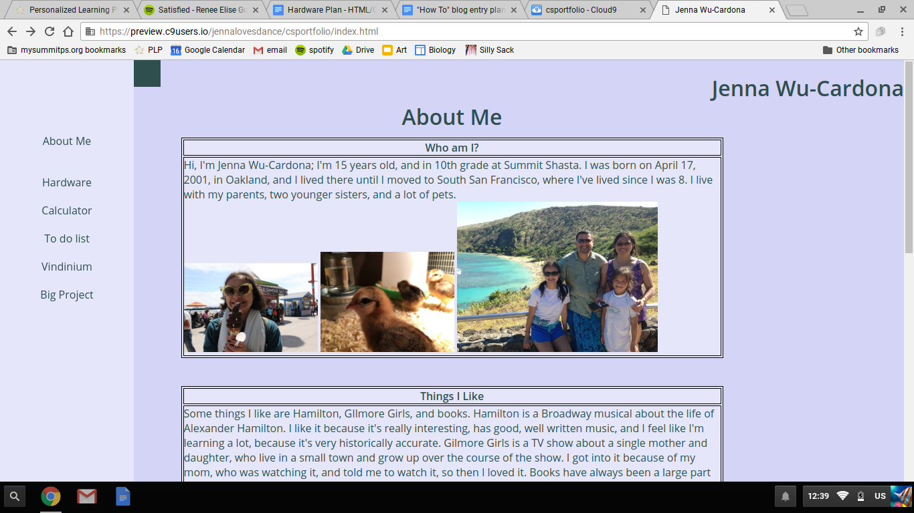
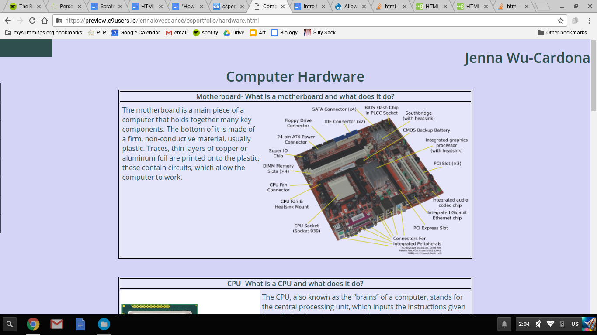
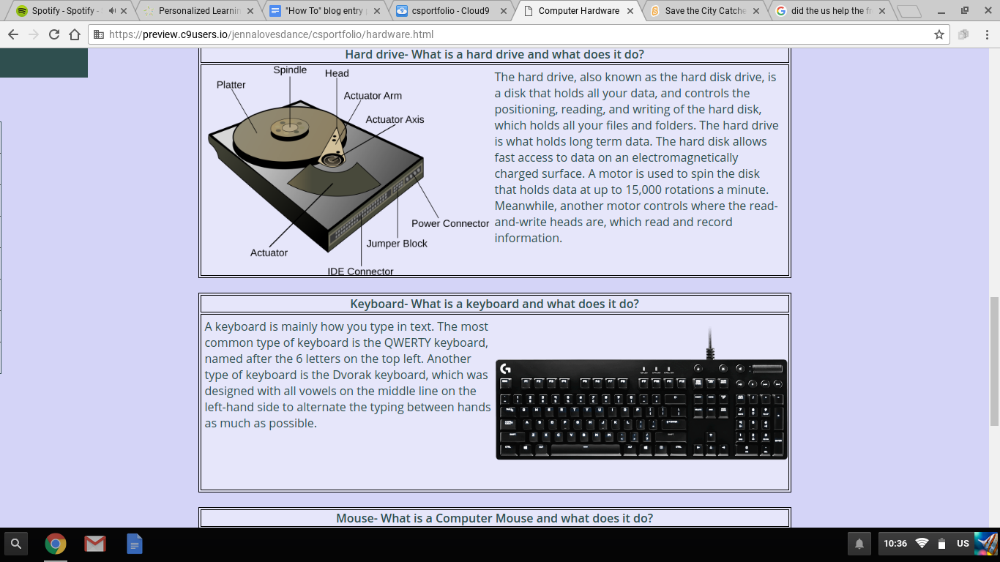

This page describes my daily work on this website, what I did that day and how I did it.
| Thursday Day 4 - 9/1/16 - About Me Page |
|---|
|

What did you add to your website that the user will see? Today I made a side navbar, that can be pulled out from the side. A classmate sent me a link to a video that explained how to do it with the code attached, so I used that and adjusted it to fit my theme. I also decided on and made a consistent color scheme of dark slate grey and 2 different shades of lavender. The decision was the hardest part. I also put my pictures in the boxes, like I had planned, and centered these boxes, which is what I was having trouble with yesterday. Finally, I also put my name at the top and put it on the right side, so it can be seen (it couldn’t before because of the navbar tab). What code did you add to your pages? Break it down into explainable chunks and include the explanations of what it does and how. I used a line break (br) to make space between my boxes, and put the pictures further down so that the text was all together. I used a divider (div) around each of my tables, I think to put the pictures into the boxes, and to be able to center the boxes. I also made the pop out menu bar, but it has a really, really long code. |
| Tuesday Day 5 - 9/2/16 - Hardware Plan |
|---|
|
What did you add to your website that the user will see? Today I didn't add anything to my website, but I worked on and finished the hardware plan. To do this, I had to research and take notes about different parts of a computer, including the Motherboard, CPU, RAM, and Hard Drive. I also made the layout for this page, which is pretty much based on the About Me page layout. |
| Tuesday Day 6 - 9/6/16 - Hardware Page |
|---|
|

What did you add to your website that the user will see? Text, images, positions, borders, colors, etc. Be specific. I made everything for my hardware page, including boxes that each subject goes in. What code did you add to your pages? Break it down into explainable chunks and include the explanations of what it does and how. First, I made a new file for the hardware page by choosing "HTML file" in the "New from Template" part of "File". I renamed this "hardware.html" so I knew what page I was using. I also had to link this page in the navbar of the About Me page. Next, I copied and pasted the style and navbar parts of my about me page file into the new hardware.html file. I also copied the format I had used for the About Me page, which was using tables, which seemed to work, but I later learned that these don't work well as a format, which is when you are supposed to use "divs" instead. However, there didn't seem to be any problems, so I used tables anyway, also because I still didn't know about divs. When I put pictures in, I used (width="60%”) to make them smaller, and I experimented with the width and height to see how they'd best fit. I used (style="margin-right:5px") to add space between the words and the border, which took a long time to figure out, but it makes the overall page look less cramped and just better. A problem I faced was that I used tables to make this page, which was confusing because the teacher didn’t know how to navigate using tables as well as with using divs, so now I have to learn how divs work. What else would be useful to have or remember to make a great ‘How To’ blog page? It would be useful to remember how to put pictures next to text, which I learned today. |
| Wednesday Day 7 - 9/7/16 - Hardware Page |
|---|
|

What did you add to your website that the user will see? Text, images, positions, borders, colors, etc. Be specific. Today I finished the Hardware Page, because yesterday I had only finished the first three sections, the motherboard, CPU, and RAM. So, the sections I finished today were the hard drive, keyboard, monitor, and mouse. I copied and pasted the format from the other sections and changed the information to match the section I was working on. What code did you add to your pages? Break it down into explainable chunks and include the explanations of what it does and how. I used tables to organize this information, which, like I said in the last section, didn't work as well as it could've, but I didn't experience any major roadblocks. The tag for a table is (table), with the parentheses being greater than/less than symbols. In the table, I made table headers, the tag of which is (th). In these I put the title of the section, and "What is a ______ and what does it do?" |